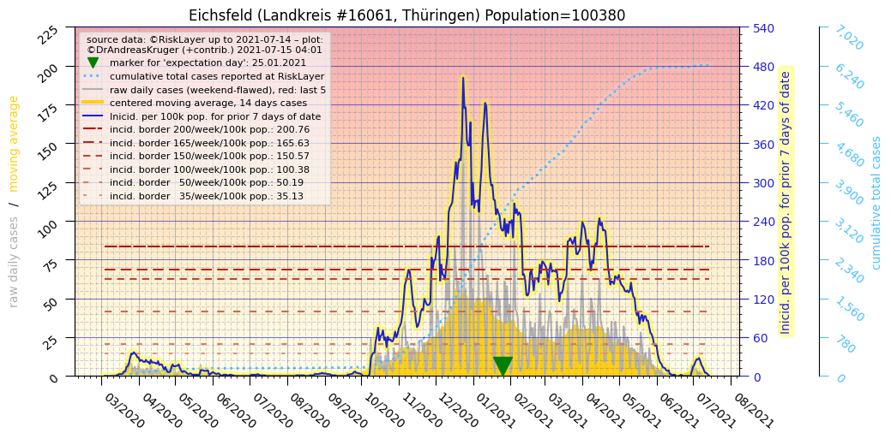
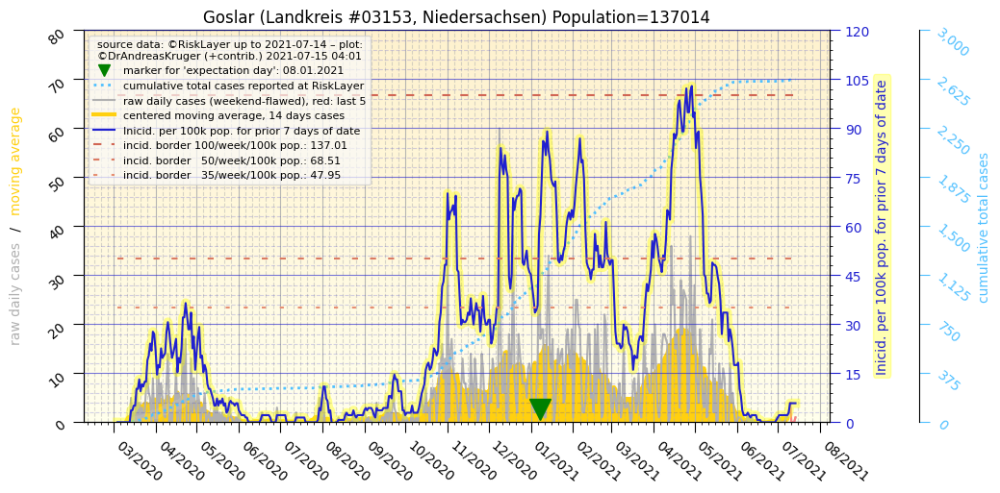
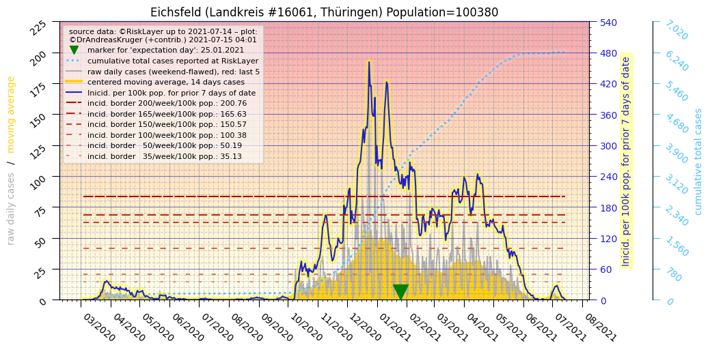
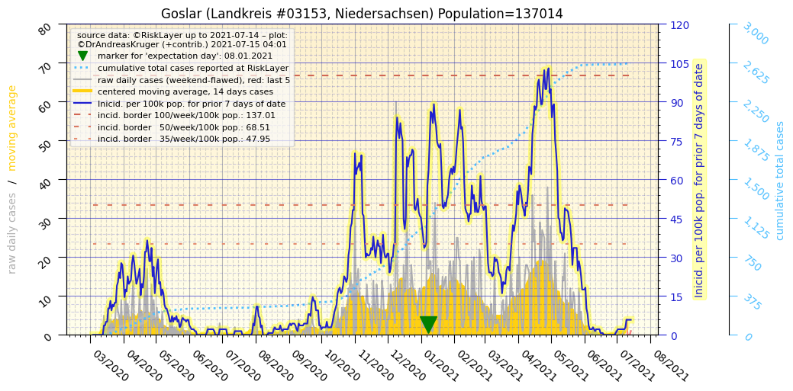

")

")

")
")
| Göttingen_LK (0.0 km) |
Eichsfeld_LK (23.1 km)  |
| Northeim_LK (25.9 km) |
Goslar_LK (40.8 km)  |
| Werra-Meißner-Kreis_LK (43.0 km) |
Nordhausen_LK (45.1 km) |
All plots are regenerated with new data every night. Beware this temporary hotspot is an experimental page - it might get removed, so please do not link to it. Instead link to project http://tiny.cc/cov19de.